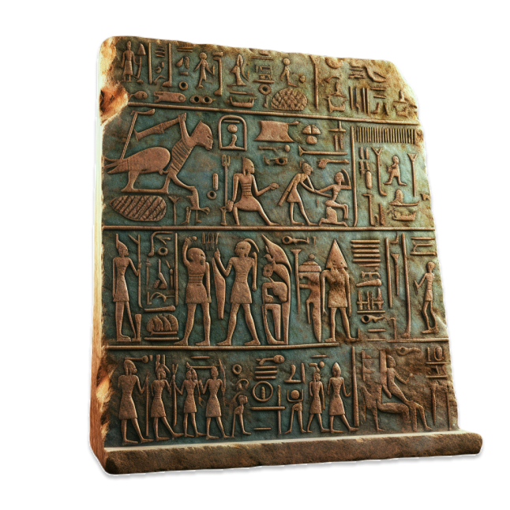
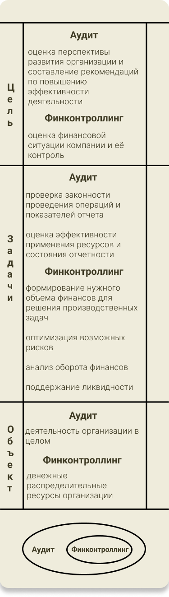

Путешествуя по Разлому, Назар и Счётик забрели в заброшенный город. Здания были разрушены, на дороге валялись куски стекол, различные обломки и мусор. Казалось, что в поселении уже давно никто не жил и появляться тут в будущем не планировал.
Возле одного из домов лежала гора книг. Они были потертыми и выцветшими, а их страницы в некоторых местах были будто погрызены животными. Неподалеку от этой кучи герой заметил на земле книгу, скрывающуюся под толстым слоем пыли. Подняв её и отряхнув, Назар прочел название.
— «Учебник по аудиту и финансовому контроллингу». Что-то очень непонятное… Как думаешь, Счётик, о чём тут написано? — спросил своего спутника герой и распахнул книгу.
Пролистав пару страниц, Назар остановился на разделе «Зарождение понятия аудита» и принялся за чтение.
С давних времен для организации учета и контроля по всему миру создавались различные ведомства, а результаты работы людей, трудящихся в них, описывались и хранились долгое время. Так, еще в Вавилоне и Древнем Египте, по свидетельствам Геродота, на пирамидах вырезали отчетность о продуктах, выданных людям на строительстве, а в Индии существовал трактат «Артхашстра, или наука политики», который содержал сведения об учетных работах. В настоящее время такая деятельность называется аудиторской.
Аудит – это проверка и оценка финансовой отчетности организации независимыми экспертами
Другими словами, это деятельность, в ходе которой специально обученные люди изучают различные процессы, протекающие в организации, просматривают и изучают документы, дают экспертную оценку и составляют план по улучшению ситуации.
Сам термин произошел от латинского audio – «слышу», когда проводились публичные заслушивания финансовых отчетов.
Проведение аудиторской проверки преследует несколько задач:
Проверка законности проведения финансово-хозяйственных операций в компании
Оценка состояния бухгалтерской и всей финансовой отчетности
Проверка достоверности основных показателей отчета (баланс)
Оценка эффективности применения ресурсов
Составление прогнозов относительно дальнейшего развития компании
Главные цели
убедиться в достоверности и точности информации, указанной в финансовой отчетности предприятия
проанализировать хозяйственную деятельность предприятия и проконтролировать соблюдение
Назар на секунду отвлекся от чтения, чтобы все осмыслить.
— Получается, когда-то в мире существовала система, с помощью которой финансовая отчетность организаций контролировалась независимыми экспертами. Неужели люди действительно её использовали? Даже не могу представить, как она работала, — сказал он.
Герой решил посмотреть содержание книги, чтобы найти ответы на свои вопросы. Его внимание привлек раздел «Классификация аудита».
Согласованный аудит
- Проверка в организации проводится повторно, на регулярной основе
- Снижение рисков организации
- Сотрудничество удобно обеим сторонам
Время осуществления
Первоначальный аудит
- Проверка в организации проводится впервые
- Трудоемкость
- Высокая степень риска, так как аудитор не знаком с деятельностью клиента полностью
АУДИТ
Внутренний
Проводится уполномоченными сотрудниками самой компании
Способ проведения
рассматривается с точки зрения компании, которой требуется аудит
Внешний
проводится независимыми экспертами, «извне»
Инициативный
Компания проводит аудит по желанию руководства и не обязана включать в состав своей отчетности аудиторское заключение
Обязательный
Проводится ежегодно вне зависимости от желания компании в соответствии с требованиями законодательства
В России наиболее известным и распространенным понятием, связанным с аудиторской деятельностью, является государственный аудит. Это процесс, осуществляемый аудиторами Счетной Палатой России.
Счетная Палата

Данные о ведении отчетности, использовании бюджетных средств и законности действий
Предоставление всем заинтересованным сторонам независимой объективной информации об экономических явления
— Смотри, Счётик, тут даже схемы и картинки разные есть! Все-таки сложные вещи становятся гораздо понятнее, когда ты наглядно можешь посмотреть на то, как они взаимосвязаны. Но неужели каждый человек мог заниматься такой важной работой? Наверное, для этого подходили только особенные, избранные люди…
Внезапно книга выпала из рук Назара, и несколько страниц перевернулись сами собой. Герой, пожав плечами, нагнулся, чтобы её поднять, и издал удивленный возглас.
— Ну ничего себе! Этот учебник будто отвечает на мои вопросы. Книга открылась прямо на главе по аудиторов!
Аудитор
Получил квалификационный аттестат аудитора
Может работать в аудиторской организации или как индивидуальный предприниматель
Имеет право работать только если сведения о нем внесены в реестр аудиторов и аудиторских организаций
Соблюдает внутренние стандарты организации, в которой он работает
Следует этическим принципам аудита
— Хм… Финансовый контроллинг…. Вообще, это звучит как что-то похожее на аудит… Я никак не могу понять, чем они могут отличаться, — с сожалением сказал Назар, — надо посмотреть, возможно далее показываетс разница между этими понятиями.
Герой принялся увлеченно листать страницы
— Вот оно! Финансовый контроллинг — это комплексная система управления организацией, направленная на координацию различных сторон её финансовой деятельности, а также на своевременное выявление отклонений финансовых результатов от запланированных. Он направлен на контроль текущего состояния финансовой отчетности, проверкой её достоверности. Именно контроллинг является поставщиком необходимых информационных данных для руководства предприятия, — прочитал вслух Назар.
В нынешнее время вопросы, связанные с повышением деятельности организаций, все больше волнуют людей. Одним из инструментов, используемых для этих целей, является финансовый контроллинг, который дает возможность увидить, насколько целесообразно используются собственные и привлеченные денежные средства, оценить материальное положение предприятия.
Аудит
Финконтроллинг
Цель
оценка перспективы развития организации и составление рекомендаций по повышению эффективности деятельности
оценка финансовой ситуации компании и её контроль
Задачи
проверка законности проведения операций и показателей отчета
оценка эффективности применения ресурсов и состояния отчетности
формирование нужного объема финансов для решения производственных задач
оптимизация возможных рисков
анализ оборота финансов
поддержание ликвидности
Объект
деятельность организации в целом
денежные распределительные ресурсы организации
Аудит
Финконтроллинг